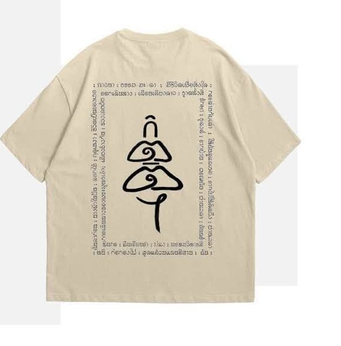

02 / THE STORYBEHIND THE ARTWORK
FROM THE
DARKNESS,
TO THE LIGHT.
เรื่องราวบางเรื่อง ไม่ได้ถูกเล่าผ่านเสียงเพลงเท่านั้น
ในช่วงหนึ่งของชีวิตที่เต็มไปด้วยความสับสนและความทุกข์ ความฝันถึงการรดน้ำเท้ารูปปั้นพระสังกัจจายน์ กลายเป็นจุดเริ่มต้นของการค้นหาความหมายบางอย่างในชีวิต
จากสิ่งที่ไม่เคยรู้จัก นำไปสู่การเรียนรู้ การปล่อยวาง และการมองเห็นหนทางใหม่อีกครั้ง
ลวดลายบนเสื้อรุ่นแรกนี้จึงไม่ใช่เพียงภาพวาด แต่เป็นบันทึกของช่วงเวลา ความทรงจำ และการเริ่มต้นใหม่ที่เราอยากส่งต่อ
กิตติฯ / KITTI — THE FIRST DROP
FIG. 01 / FRONT ARTWORK

FIG. 02 / BACK ARTWORK